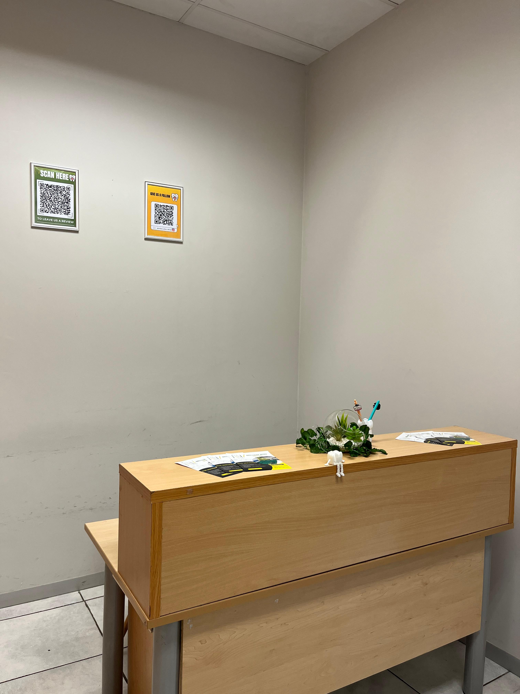
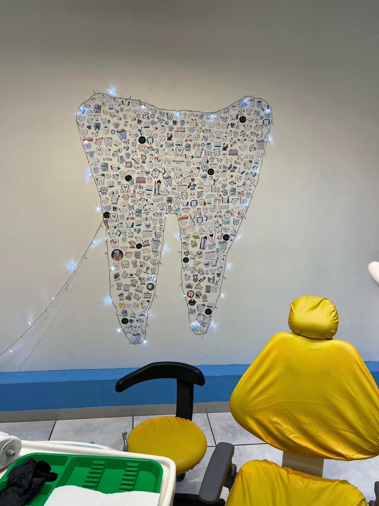

BRILLIANT BITES
DENTAL

Professional, gentle and affordable dental care for the whole family.
Schedule Appointment
At Brilliant Bites Dental we are dedicated to providing exceptional dental care in a warm and welcoming environment. Our team is committed to ensuring that every patient leaves with a smile!
We offer affordable, high-quality care, personalized attention, and a friendly environment for the whole family. Your comfort and confidence are our priority!
"Dr. Naicker is super professional. She has gentle, steady hands. She makes you feel safe and in great hands. Her work is remarkable😁 She leaves you smiling for days. You may feel like you have known her for years, that's how great she is with people, let alone your teeth. Her practice is clean and orderly. There is secure parking."
"Amazing service and such a lovely dentist! 💫 She’s professional, gentle, and genuinely cares about her patients’ wellbeing. What really stands out is that she’s affordable and understanding — she doesn’t try to take all your money like some other doctors do. Instead, she explains your options clearly and helps you choose the best treatment plan based on your budget. Highly recommend Brilliant Bites Dental for anyone looking for honest, caring, and quality dental care. 🦷✨"
"The best dental service I’ve ever received. Dr Naicker is the sweetest, most professional doctor. Sara her assistant is also amazing! 10/10 service, so much care, gentleness and professionalism. The space is clean and inviting. Her consultation fee is also affordable making it accessible. I was super impressed by the service, we need more doctors like this!"
"We all hate Dentists... let's be honest. Brilliant Bites Dental in Randburg Square Shopping Center, got me in and out the chair, with a full check up, cleaning and filling in 30 mins. Their service and how they make sure you are feeling comfortable at all times really helped my anxiety. They then followed up a few days later to make sure everything was good. That was a definite first. Good service, fear management and follow up calls? This was definitely a first, I cannot recommend them any more, do yourself a favour if you in the area pop in, they do walk ins as well so no appointment needed."
"The most humble Dr. Ever and the service is exceptional and they are gentle ,as a parent I was scared that my daughter had to visit a dentist and when I got to Brilliant bites dental I was so relieved once the dentist explained to me about what needs to happen … the healing process is beyond amazing aswell . I highly recommend their services."
"Exceptional Dental Care with Dr. BK Naicker Dr. BK Naicker is by far the best dentist I have ever been to! I usually dread dental visits because many dentists can be aggressive, but Dr. Naicker is the complete opposite—gentle, professional, and truly dedicated to patient care. She pays incredible attention to detail and ensures that every procedure is done with precision and care. What I appreciate most is her genuine concern for her patients, always striving to provide the best possible treatment. If you’re looking for a skilled and compassionate dentist, I highly recommend Dr. BK Naicker!"